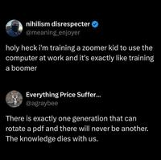

0

0
0
Last week a University of Arizona astronomy professor "watched anxiously...as an awe-inspiring SpaceX Falcon 9 rocket carried NASA's new exoplanet telescope, Pandora, into orbit."
In 2018 NASA had approached Daniel Apai to help build the telescope, which he says will "shatter a barrier — to understand and remove a source of noise in the data — that limits our ability to study small exoplanets in detail and search for life on them."
Astronomers have a trick to study exoplanet atmospheres. By observing the planets as they orbit in front of their host stars, we can study starlight that filters through their atmospheres... But, starting from 2007, astronomers noted that starspots — cooler, active regions on the stars — may disturb the transit measurements. In 2018 and 2019, then-Ph.D. student Benjamin V. Rackham, astrophysicist Mark Giampapa and I published a series of studies showing how darker starspots and brighter, magnetically active stellar regions can seriously mislead exoplanets measurements. We dubbed this problem "the transit light source effect...."
In our papers — published three years before the 2021 launch of the James Webb Space Telescope - we predicted that the Webb cannot reach its full potential. We sounded the alarm bell...
Pandora will do what Webb cannot: It will be able to patiently observe stars to understand how their complex atmospheres change.
By staring at a star for 24 hours with visible and infrared cameras, it will measure subtle changes in the star's brightness and colors. When active regions in the star rotate in and out of view, and starspots form, evolve and dissipate, Pandora will record them. While Webb very rarely returns to the same planet in the same instrument configuration and almost never monitors their host stars, Pandora will revisit its target stars 10 times over a year, spending over 200 hours on each of them.
It's the first space telescope "built specifically for detailed multi-color observations of starlight filtered through the atmospheres of exoplanets," reports the Arizona Daily Star, noting the University of Arizona will serve as mission control:
[T]echnicians will operate Pandora in real time and monitor its telemetry and overall health under a contract with NASA... The spacecraft will undergo about a month of commissioning before beginning science operations, which are scheduled to last for a year...
Pandora was selected as part of NASA's Astrophysics Pioneers program, which was created in 2020 to foster compelling, relatively low-cost science missions using smaller, cheaper hardware and flight platforms with a price cap of no more than $20 million. By comparison, the Webb telescope — the largest and most powerful astronomical observatory ever sent into space — carries a pricetag of about $10 billion.
Pandora is a joint mission NASA and California's Lawrence Livermore National Laboratory.
Read more of this story at Slashdot.
0
The European Commission "has opened a public call for evidence on European open digital ecosystems," writes Help Net Security, part of preparations for an upcoming Communication "that will examine the role of open source in EU's digital infrastructure."
The consultation runs from January 6 to February 3, 2026. Submissions will be used to shape a Commission Communication addressed to the European Parliament, the Council, and other EU bodies, which is scheduled for publication in the first quarter of 2026... The call for evidence links Europe's reliance on digital technologies developed outside the EU to concerns over long term control of infrastructure and software supply chains... Open digital ecosystems are discussed in the context of technological sovereignty and the use of technologies that can be inspected, adapted, and shared.
Long-time Slashdot reader Elektroschock describes it as the European Commission "stepping up its efforts behind open-source software"
Building on President von der Leyen's political guidelines, the initiative will review the Commission's 2020-2023 open-source approach and set out concrete actions to strengthen Europe's open-source ecosystem across key areas such as cloud, AI, cybersecurity and industrial technologies. The strategy will be presented alongside the upcoming Cloud and AI Development Act, forming a broader policy package aimed at reducing strategic dependencies and boosting Europe's digital resilience.
And "In just a few days, over 370 submissions have already been filed, indicating that the issue is touching a nerve across the EU," writes CyberNews.com:
"Europe must regain control over its software supply chain to safeguard freedom, security, and innovation," suggests an individual from Slovakia. Similar perspectives appear to be widely shared among respondents...
The document doesn't mention US tech giants specifically, but rather aims to support tech sovereignty and seek "digital solutions that are valid alternatives to proprietary ones...."
"This is not a legislative initiative. The strategy will take the form of a Commission communication. The initiative will set out a general approach and will propose: actions relying on further commitments and an implementation process," the EC explains. Policymakers expect the strategy to help EU member states identify the necessary steps to support national open-source companies and communities.
Read more of this story at Slashdot.
0
The senior editor at the blog Windows Central decries two serious Windows issues "that were not spotted by Microsoft during testing, and are so severe that the company has now issued an emergency fix to address the problems."
Microsoft's first update for Windows 11 in 2026 has already caused two major issues that saw users unable to fully shutdown their PCs or sign-in into a device when using Remote Desktop... Being unable to shut down your PC due to a recent OS update is a huge oversight on Microsoft's part, but this is the latest in a long list of updates over the last year to cause a major issue like this... Other issues that have cropped up in Windows 11 in the last year include a bug that caused Task Manager to fail to close when the user exited the application, causing system resources to lock up after a prolonged period of time if the user had opened and closed Task Manager multiple times in a session.
Another update caused saw File Explorer flashbang users with a white screen when opening it in dark mode, which appeared in an update that was supposed to improve dark mode on Windows 11...
For whatever reason, the Windows Insider Program doesn't appear to be working anymore, as severe bugs are somehow making it into shipping versions of the OS.
"The out of band updates, KB5077744 and KB5077797, are available now via Windows Update and is rolling out to everybody," they write. "Once installed, your PC should go back to being able to shut down successfully, and signing-in via Remote Desktop should work again."
Microsoft has also officially acknowledged a third bug which crashes Outlook Classic when using POP accounts, according to the blog Windows Latest, which adds that that bug has not yet been fixed.
They've also identified other minor bugs, including "a black screen problem in Windows 11 KB5074109... either due to the update itself or some compatibility issues with GPU drivers."
After you install the January 2026 Update, Windows triggers random black screens where the desktop freezes for a second or two, the display goes black, then everything comes back. I can't pinpoint any specific configuration, but I can confirm the black screen issue has been observed on a small subset of PCs with both Nvidia and AMD GPUs. After you install the January 2026 Update, Windows triggers random black screens where the desktop freezes for a second or two, the display goes black, then everything comes back.
Read more of this story at Slashdot.
0
An anonymous reader shared this report from CNN:
Particles from Earth's atmosphere have been carried into space by solar wind and have been landing on the moon for billions of years, mixing into the lunar soil, according to a new study [published in the journal Nature Communications Earth & Environment last month]. The research sheds new light on a puzzle that has endured for over half a century since the Apollo missions brought back lunar samples with traces of substances such as water, carbon dioxide, helium and nitrogen embedded in the regolith — the moon's dusty surface layer.
Early studies theorized that the sun was the source of some of these substances. But in 2005 researchers at the University of Tokyo suggested that they could have also originated from the atmosphere of a young Earth before it developed a magnetic field about 3.7 billion years ago. The authors suspected that the magnetic field, once in place, would have stopped the stream by trapping the particles and making it difficult or impossible for them to escape into space. Now, the new research upends that assumption by suggesting that Earth's magnetic field might have helped, rather than blocked, the transfer of atmospheric particles to the moon — which continues to this day.
"This means that the Earth has been supplying volatile gases like oxygen and nitrogen to the lunar soil over all this time," said Eric Blackman, coauthor of the new study and a professor in the department of physics and astronomy at the University of Rochester in New York.
Earth's magnetic field "somewhat inflates the atmosphere of Earth" when it's hit by solar winds, according to study coauthor Eric Blackman, a physics/astronomy professor at New York's University of Rochester. He told CNN the moon passes through this region for a few days each month, with particles landing on the lunar surface and embedding in the soil (because the moon lacks an atmosphere that would block them).
This also means the moon's soil could actually contain a chemical record of Earth's ancient atmosphere, according to the study — "spanning billions of years..."
Read more of this story at Slashdot.
0
Slashdot reader BrianFagioli writes: Acer has filed three separate patent infringement lawsuits against AT&T, Verizon, and T-Mobile, taking the unusual step of hauling the nation's largest wireless carriers into federal court. The suits, filed in the Eastern District of Texas, claim the companies are using Acer-developed cellular networking technology without paying for the privilege. Acer says it tried to negotiate licenses for years but reached a dead end, arguing it was left with no option except litigation. The case centers on six U.S. patents Acer asserts are core to modern wireless networks, rather than anything tied to PCs or laptops. The company describes itself as reluctant to pursue courtroom battles, but it has been quietly building a large global patent portfolio after pouring hundreds of millions of dollars into R&D. Acer also notes that some of its patents count as standard-essential, hinting the carriers may be required to license them. All three companies are expected to push back, and the dispute could become another long-running telecom patent saga. Consumers will not notice any immediate changes, but if Acer wins or settles, it may find a new revenue stream far beyond its traditional hardware business.
Further coverage from Hot Hardware
Read more of this story at Slashdot.
0
Long-time Slashdot reader schwit1 shared this report from Futurism:
China has unveiled an extremely powerful "hypergravity machine" that can generate forces almost two thousand times stronger than Earth's regular gravity.
The futuristic-looking machine, called CHIEF1900, was constructed at China's Centrifugal Hypergravity and Interdisciplinary Experiment Facility (CHIEF) at Zheijang University in Eastern China, and allows researchers to study how extreme forces affect various materials, plants, cells, or other structures, as the South China Morning Post reports... [Once up and running, it will allow researchers to recreate "catastrophic events such as dam failures and earthquakes inside a laboratory, according to the university."] For instance, it can analyze the structural stability of an almost 1,000-feet-tall dam by spinning a ten-foot model at 100 Gs, meaning 100 times the Earth's regular gravity. It could also be used to study the resonance frequencies of high-speed rail tracks, or how pollutants seep into soil over thousands of years.
The machine officially dethroned its predecessor, CHIEF1300, which became the world's most powerful centrifuge a mere four months ago... It can generate 1,900 g-tonnes of force, or 1,900 times the Earth's gravity. To put that into perspective, a washing machine only reaches about two g-tonnes.
Read more of this story at Slashdot.
0
European satellite operator Eutelsat "plans to launch 440 Airbus-built LEO satellites in the coming years to replenish and expand its constellation," Reuters reported Friday. And last week America's Federal Communications Commission approved SpaceX's request to deploy another 7,500 Starlink satellites, while Starlink "projects it will eventually have a constellation of 34,000 satellites," writes Fast Company, and Amazon's Project Leo "plans to launch more than 3,200 satellites."
Meanwhile "Beijing and some Chinese companies are planning two separate mega-constellations, Guowang and G60 Starlink, totaling nearly 26,000 satellites," and this week the Chinese government "applied for launch permits for 200,000 satellites."
But a small Texas-based company called AST SpaceMobile "believes it can provide better service with fewer than 100 gigantic satellites in space."
AST SpaceMobile has developed a direct-to-cell technology that utilizes large satellites called BlueBirds. These machines use thousands of antennas to deliver broadband coverage directly to standard mobile phones, says the company's president, Scott Wisniewski. "This approach is remarkably efficient: We can achieve global coverage with approximately 90 satellites, not thousands or even tens of thousands required by other systems," Wisniewski writes in an email...
The key is its satellites' size and sophistication. AST's first generation of commercial satellite, the BlueBird 1-5, unfolds into a massive 693-square-foot array in space. Today, the company has five operational BlueBird 1-5 satellites in orbit, but its ambitions are much bigger. On December 24, 2025, AST launched the first of its next-generation satellites from India — called Block 2 — and this one broke records. The BlueBird 6 has a surface of almost 2,400 square feet, making it the largest single satellite in low Earth orbit. The company plans to launch up to 60 more by the end of 2026. "This large surface area is essential for gathering faint signals from standard, unmodified mobile phones on the ground," Wisniewski explains. It is essentially a single, extremely powerful and sensitive cell tower in the sky, capable of serving a huge geographical area...
To be clear, AST SpaceMobile's approach is not without its own controversies. The sheer size of the company's satellites makes them incredibly bright in the night sky, a significant source of frustration for ground-based astronomers. McDowell confirms that when it launched in 2022, AST's prototype satellite, BlueWalker 3, became "one of the top 10 brightest objects in the night sky for a while."
"It's a serious issue, and we are working directly with the astronomy community to mitigate our impact," Wisniewski says. The company is exploring solutions like anti-reflective coatings and operational adjustments to minimize the time its satellites are at maximum brightness...
AST SpaceMobile has already proven its technology works, the article points out, with six working satellites now transmitting at typical 5G speeds directly to regular phones.
Read more of this story at Slashdot.
0
As 2026 begins, MIT Technology Review publishes "educated guesses" on emerging technologies that will define the future, advances "we think will drive progress or incite the most change — for better or worse — in the years ahead."
This year's list includes next-gen nuclear, gene-editing drugs (as well as the "resurrection" of ancient genes from extinct creatures), and three AI-related developments: AI companions, AI coding tools, and "mechanistic interpretability" for revealing LLM decision-making.
But also on the list is sodium-ion batteries, "a cheaper, safer alternative to lithium."
Backed by major players and public investment, they're poised to power grids and affordable EVs worldwide. [Chinese battery giant CATL claims to have already started manufacturing sodium-ion batteries at scale, and BYD also plans a massive production facility for sodium-ion batteries.] The most significant impact of sodium-Âion technology may be not on our roads but on our power grids. Storing clean energy generated by solar and wind has long been a challenge. Sodium-ion batteries, with their low cost, enhanced thermal stability, and long cycle life, are an attractive alternative. Peak Energy, a startup in the US, is already deploying grid-scale sodium-ion energy storage. Sodium-ion cells' energy density is still lower than that of high-end lithium-ion ones, but it continues to improve each year — and it's already sufficient for small passenger cars and logistics vehicles.
And another "breakthrough technology" on their list is commercial space stations:
Vast Space from California, plans to launch its Haven-1 space station in May 2026 on a SpaceX Falcon 9 rocket. If all goes to plan, it will initially support crews of four people staying aboard the bus-size habitat for 10 days. Paying customers will be able to experience life in microgravity and conduct research such as growing plants and testing drugs. On its heels will be Axiom Space's outpost, the Axiom Station, consisting of five modules (or rooms). It's designed to look like a boutique hotel and is expected to launch in 2028. Voyager Space aims to launch its version, called Starlab, the same year, and Blue Origin's Orbital Reef space station plans to follow in 2030.
Thanks to long-time Slashdot reader sandbagger for sharing the article.
Read more of this story at Slashdot.
0
In December 2024 the Google Threat Intelligence Group published research on the code of the commercial spyware "Predator". But there's now been new research by Jamf (the company behind a mobile device management solution) showing Predator is more dangerous and sophisticated than we realized, according to SecurityWeek.
Long-time Slashdot reader wiredmikey writes:
The new research reveals an error taxonomy that reports exactly why deployments fail, turning black boxes into diagnostic events for threat actors. Almost exclusively marketed to and used by national governments and intelligence agencies, the spyware also detects cybersecurity tools, suppresses forensics evidence, and has built-in geographic restrictions.
Read more of this story at Slashdot.
0
Ars Technica reports:
Security firm Mandiant [part of Google Cloud] has released a database that allows any administrative password protected by Microsoft's NTLM.v1 hash algorithm to be hacked in an attempt to nudge users who continue using the deprecated function despite known weaknesses.... a precomputed table of hash values linked to their corresponding plaintext. These generic tables, which work against multiple hashing schemes, allow hackers to take over accounts by quickly mapping a stolen hash to its password counterpart... Mandiant said it had released an NTLMv1 rainbow table that will allow defenders and researchers (and, of course, malicious hackers, too) to recover passwords in under 12 hours using consumer hardware costing less than $600 USD. The table is hosted in Google Cloud. The database works against Net-NTLMv1 passwords, which are used in network authentication for accessing resources such as SMB network sharing.
Despite its long- and well-known susceptibility to easy cracking, NTLMv1 remains in use in some of the world's more sensitive networks. One reason for the lack of action is that utilities and organizations in industries, including health care and industrial control, often rely on legacy apps that are incompatible with more recently released hashing algorithms. Another reason is that organizations relying on mission-critical systems can't afford the downtime required to migrate. Of course, inertia and penny-pinching are also causes.
"By releasing these tables, Mandiant aims to lower the barrier for security professionals to demonstrate the insecurity of Net-NTLMv1," Mandiant said. "While tools to exploit this protocol have existed for years, they often required uploading sensitive data to third-party services or expensive hardware to brute-force keys."
"Organizations that rely on Windows networking aren't the only laggards," the article points out. "Microsoft only announced plans to deprecate NTLMv1 last August."
Thanks to Slashdot reader joshuark for sharing the news.
Read more of this story at Slashdot.
0
Friday a federal judge "cleared U.S. power company Dominion Energy to resume work on its Virginia offshore wind project." But a U.S. federal judge also ruled Thursday that another major offshore wind farm is allowed to resume construction, reports the Hill. "The project, which would supply power to New York, was one of five that were halted by the Trump administration in December...."
In fact, there were three different court rulings this week each allowing construction to continue on a U.S. wind project:
Judge Carl Nichols, a Trump appointee, granted a preliminary injunction allowing Empire Wind to keep building... Another, Revolution Wind, was also allowed to move forward in court this week... The project would provide enough power for up to 500,000 homes, according to its website. The court's decision allows construction to resume while the underlying case against the Trump order plays out.
Meanwhile, power company Orsted "is also suing over the pause of its Sunrise Wind project for New York," reports the Associated Press, "with a hearing still to be set."
The fifth paused project is Vineyard Wind, under construction in Massachusetts. Vineyard Wind LLC, a joint venture between Avangrid and Copenhagen Infrastructure Partners, joined the rest of the developers in challenging the administration on Thursday.
CNN points out that the Vineyard Wind project "has been allowed to send power to the grid even amid Trump's suspension, a spokesperson for regional grid operator ISO-New England told CNN in an email."
Residential customers in the mid-Atlantic region, including Virginia, desperately need more energy to service the skyrocketing demand from data centers â" and many are seeing spiking energy bills while they wait for new power to be brought online.
CNN notes that president Trump said last week "My goal is to not let any windmill be built; they're losers."
The Associated Press adds that "In contrast to the halted action in the US, the global offshore wind market is growing, with China leading the world in new installations. Nearly all of the new electricity added to the grid in 2024 was renewable. The British government said on Wednesday it had secured a record 8.4 gigawatts of offshore wind in Europe's largest offshore wind auction, enough clean electricity to power more than 12m homes."
Read more of this story at Slashdot.
0
A new article from Bloomberg says dozens of America's colleges "succumbed to a fundamental problem killing colleges across the US: not enough students. The schools will award their final degrees this spring, stranding students not yet ready to graduate and forcing faculty and staff to hunt for new jobs."
The country's tumbling birth rate is pushing schools toward a "demographic cliff," where a steadily dropping population of people in their late teens and early 20s will leave desks and classrooms empty. Many smaller, lesser-known schools like Cazenovia have already hit the precipice. They're firing professors, paring back liberal arts courses in favor of STEM — or closing altogether. Others will likely reach the cliff in the next few years... [T]the US birth rate ticked upward slightly before the 2008 financial crisis, and that brief demographic boost has kept enrollment at larger schools afloat. But the nationwide pool of college-aged Americans is expected to shrink after 2025. Schools face the risk that each incoming class could be smaller than the last. The financial pressure will be relentless...
Since 2020, more than 40 schools have announced plans to close, displacing students and faculty and leaving host towns without a key economic engine... Close to 400 schools could vanish in the coming decade, according to Huron Consulting Group. The projected closures and mergers will impact around 600,000 students and redistribute about $18 billion in endowment funds, Huron estimates... Pennsylvania State University, citing falling enrollment at many of its regional branches, plans to shutter seven of its 20 branch campuses after the spring 2027 semester... [C]ampuses in far-flung places, without brand recognition, are falling out of favor with students already questioning the value of a college degree. For example, while Penn State's flagship University Park campus saw enrollment grow 5% from 2014 to 2024, 12 other Penn State campuses recorded a 35% drop, according to a report tasked with determining whether closures were necessary.
The article notes that "Less than half of students whose schools shut down before they graduate re-enroll in another college or university, according to a 2022 study."
But even at colleges that remain, "The shrinking supply of students has already sparked a frenzied competition for high school seniors..."
Some public institutions are letting seniors bypass traditional requirements like essays and letters of recommendation to gain entry automatically... Direct-admission programs, which allow students to skip traditional applications, are one potential response. Some 15 states have them, according to Taylor Odle, assistant professor of educational policy studies at the University of Wisconsin-Madison. He found in a 2022 paper that direct admissions increased first-year undergrad enrollment by 4% to 8%... And they don't require nearly as many paid staff to run, since there are no essays or letters of recommendation to read.
Read more of this story at Slashdot.
0
This week Google "unveiled a set of tools for retailers that helps them roll out AI agents," reports the Wall Street Journal,
The new retail AI agents, which help shoppers find their desired items, provide customer support and let people order food at restaurants, are part of what Alphabet-owned Google calls Gemini Enterprise for Customer Experience. Major retailers, including home improvement giant Lowe's, the grocer Kroger and pizza chain Papa Johns say they are already using Google's tools to help prepare for the incoming wave of AI-assisted shopping and ordering...
Kicking off the race among tech giants to get ahead of this shift, OpenAI released its Instant Checkout feature last fall, which lets users buy stuff directly through its chatbot ChatGPT. In January, Microsoft announced a similar checkout feature for its Copilot chatbot. Soon after OpenAI's release last year, Walmart said it would partner with OpenAI to let shoppers buy its products within ChatGPT.
But that's just the beginning, reports the New York Times, with hundreds of start-ups also vying for the attention of retailers:
There are A.I. start-ups that offer in-store cameras that can detect a customer's age or gender, robots that manage shelves on their own and headsets that give store workers access to product information in real time... The scramble to exploit artificial intelligence is happening across the retail spectrum, from the highest echelons of luxury goods to the most pragmatic of convenience stores.
7-Eleven said it was using conversational A.I. to hire staff at its convenience stores through an agent named Rita (Recruiting Individuals Through Automation). Executives said that they no longer had to worry about whether applicants would show up to interviews and that the system had reduced hiring time, which had taken two weeks, to less than three days.
The article notes that at the National Retail Federation conference, other companies showing their AI advancements included Applebee's, IHOP, the Vitamin Shoppe, Urban Outfitters, Rag & Bone, Kendra Scott, Michael Kors and Philip Morris.
Read more of this story at Slashdot.
0
At the AI safety site Foom, science journalist Mordechai Rorvig explores a paper presented at November's Empirical Methods in Natural Language Processing conference:
[R]esearchers at the Swiss Federal Institute of Technology (EPFL), the Massachusetts Institute of Technology (MIT), and Georgia Tech revisited earlier findings that showed that language models, the engines of commercial AI chatbots, show strong signal correlations with the human language network, the region of the brain responsible for processing language... The results lend clarity to the surprising picture that has been emerging from the last decade of neuroscience research: That AI programs can show strong resemblances to large-scale brain regions — performing similar functions, and doing so using highly similar signal patterns.
Such resemblances have been exploited by neuroscientists to make much better models of cortical regions. Perhaps more importantly, the links between AI and cortex provide an interpretation of commercial AI technology as being profoundly brain-like, validating both its capabilities as well as the risks it might pose for society as the first synthetic braintech. "It is something we, as a community, need to think about a lot more," said Badr AlKhamissi, doctoral student in computer science at EPFL and first author of the preprint, in an interview with Foom. "These models are getting better and better every day. And their similarity to the brain [or brain regions] is also getting better — probably. We're not 100% sure about it...."
There are many known limitations with seeing AI programs as models of brain regions, even those that have high signal correlations. For example, such models lack any direct implementations of biochemical signalling, which is known to be important for the functioning of nervous systems.
However, if such comparisons are valid, then they would suggest, somewhat dramatically, that we are increasingly surrounded by a synthetic braintech. A technology not just as capable as the human brain, in some ways, but actually made up of similar components.
Thanks to Slashdot reader Gazelle Bay for sharing the article.
Read more of this story at Slashdot.
0
=[
"More than half of all cryptocurrencies ever launched are now defunct," reports CoinDesk, citing a new analysis by cryptocurrency data aggregator CoinGecko.
And most of those failures occurred in 2025:
The study looked at token listings on GeckoTerminal between mid-2021 and the end of 2025. Of the nearly 20.2 million tokens that entered the market during that period, 53.2% are no longer actively traded. A staggering 11.6 million of those failures happened in 2025 alone — accounting for 86.3% of all token deaths over the past five years.
One key driver behind the surge in dead tokens was the rise of low-effort memecoins and experimental projects launched via crypto launchpads like pump.fun, CoinGecko analyst Shaun Paul Lee said. These platforms lowered the barrier to entry for token creation, leading to a wave of speculative assets with little or no development backing. Many of these tokens never made it past a handful of trades before disappearing.
Read more of this story at Slashdot.
0
New York Times : Inside the 2026 National Retail Federation conference in New York City, where integrating AI into retail businesses was the overarching theme on the expo floor — Stores of all kinds are using artificial intelligence to sell everything from luxury handbags to hay for horses.
0
Helene Braun / CoinDesk : CoinGecko: over 53% of the 20.2M crypto tokens launched since 2021 are now inactive, with 7.7M tokens failing in Q4 2025, after Oct. 10 “liquidation cascade” — Over 13.4 million tokens have been erased between mid-2021 and 2025, according to a new analysis by CoinGecko. — What to know:
0
Sarah Perez / TechCrunch : Similarweb: Threads had 141.5M DAUs on iOS and Android as of January 7, driven by Instagram promotions, while X had 125M DAUs; X continues to lead on the web — A report from market intelligence firm Similarweb suggests that Meta's Threads is now seeing more daily usage than Elon Musk's X on mobile devices.
0
Julie Bort / TechCrunch : RunPod, an AI app hosting service launched four years ago that raised a $20M seed in May 2024, says it has reached a $120M annual revenue run rate — Runpod, an AI app hosting platform that launched four years ago, has hit a $120 million annual revenue run rate, founders Zhen Lu and Pardeep Singh tell TechCrunch.
0
George Hammond / Financial Times : Sources: Sequoia is planning a big investment in Anthropic, joining a round led by GIC and Coatue, which are investing $1.5B each; Anthropic aims to raise $25B+ — Silicon Valley investor to write first cheque for AI start-up after recent leadership overhaul
0
Dr. Ian Cutress / More Than Moore : Q&A with SiFive co-founder Krste Asanovi&cacute, who was part of the original team that developed RISC-V, on creating a company that builds IP around RISC-V, and more — Update: SiFive just announced today that it has partnered with NVIDIA for NVLink Fusion on RISC-V. It's a big step, and we'll be covering that separately.
0
Manish Singh / India Dispatch : India's largest retailer Reliance Retail says its daily quick commerce orders peaked at 1.6M in Q4 2025; market leader Blinkit averaged 2.4M daily orders in Q3 — The rest of the industry is not feeling it. — India's largest retail chain is reporting impressive growth in quick commerce, but the industry is not buying it.
0
Ben Cohen / Wall Street Journal : A look at the making of The Thinking Game, a documentary about Google DeepMind and its CEO Demis Hassabis, garnering 285M+ views on YouTube since November 2025 — A documentary about Google DeepMind has become wildly popular. Before he turned his attention to AI, the film's director learned everything from the NFL.
0
Jeremy Kahn / Fortune : OpenAI's former Head of Policy Research Miles Brundage announces AVERI, a nonprofit aimed at advocating the idea of external audits for frontier AI models — Former OpenAI policy chief Miles Brundage, who has just founded a new nonprofit institute called AVERI that is advocating …
0
Marc Jones / Reuters : Atlantic Council: China-led cross-border digital currency platform mBridge, still a prototype, has processed 4,000+ cross-border transactions totaling $55.5B — Transactions on a new China-led digital currency platform have surged to over $55 billion, a new report shows …
0
Iain Martin / Forbes : Listen Labs, whose AI tools help Microsoft and others run customer research and interviews, raised a $69M Series B led by Ribbit Capital at a $500M+ valuation — The San Francisco-based company, which has run more than 1 million customer interviews with its automated AI tools …
0
John Reynolds / Tech.eu : Mannheim, Germany-based osapiens, a provider of ESG compliance software, raised a $100M Series C from Decarbonization Partners at a $1.1B valuation — The $100m Series C was funded solely by Decarbonization Partners, the joint venture between BlackRock and Temasek.
0
Axios : David Sacks and top MAGA influencers are publicly opposing House Foreign Affairs Chair Brian Mast's proposed AI OVERWATCH Act to regulate AI chip sales to China — But the accusations are flying fast. — “The AI Overwatch Act (H.R. 6875) may sound like a good idea, but when you examine it closely …
0
Caroline Haskins / Wired : The AI boom is driving an unprecedented wave of data center construction, but there aren't enough skilled workers in the US, such as electricians, to keep up — The AI boom is driving an unprecedented wave of data center construction, but there aren't enough skilled tradespeople in the US to keep up.
0
Rob Copeland / New York Times : A look at Michael Saylor's Strategy, known for buying bitcoin via creative financing strategies, as its stock trades way below its peak amid the crypto downturn — Had you glanced too quickly at the crowd packed into Michael Saylor's Tuscan-style Miami compound, you might have assumed it was just another rich dude's party.